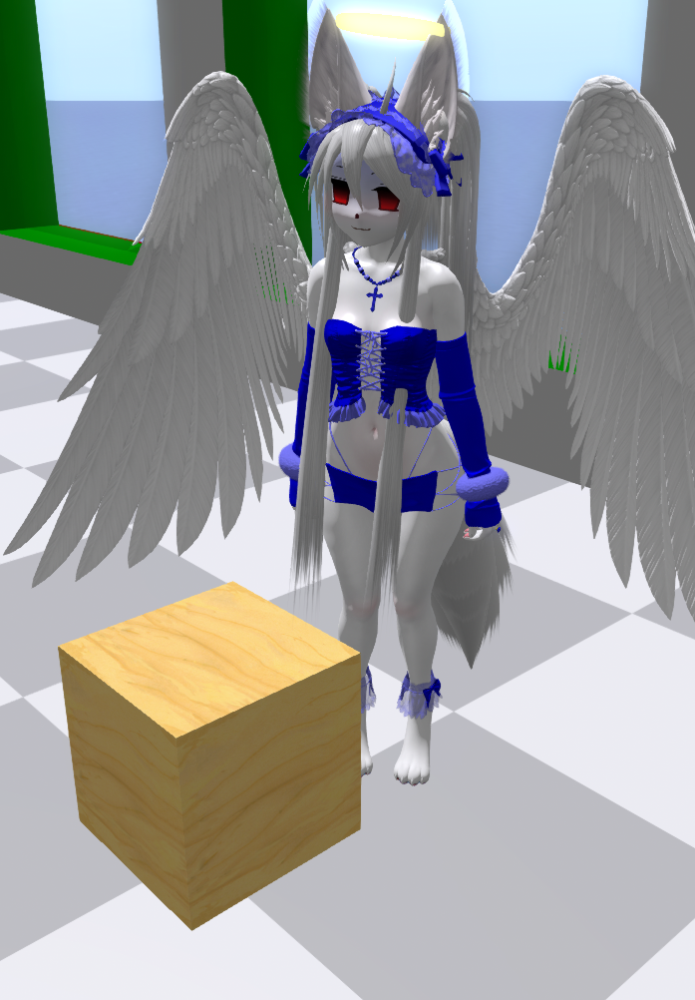
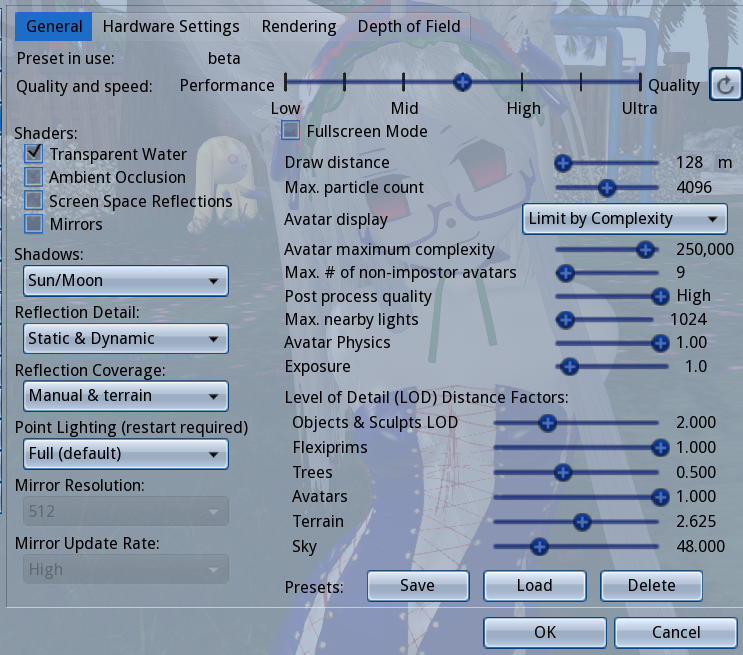
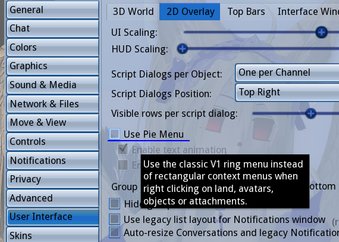
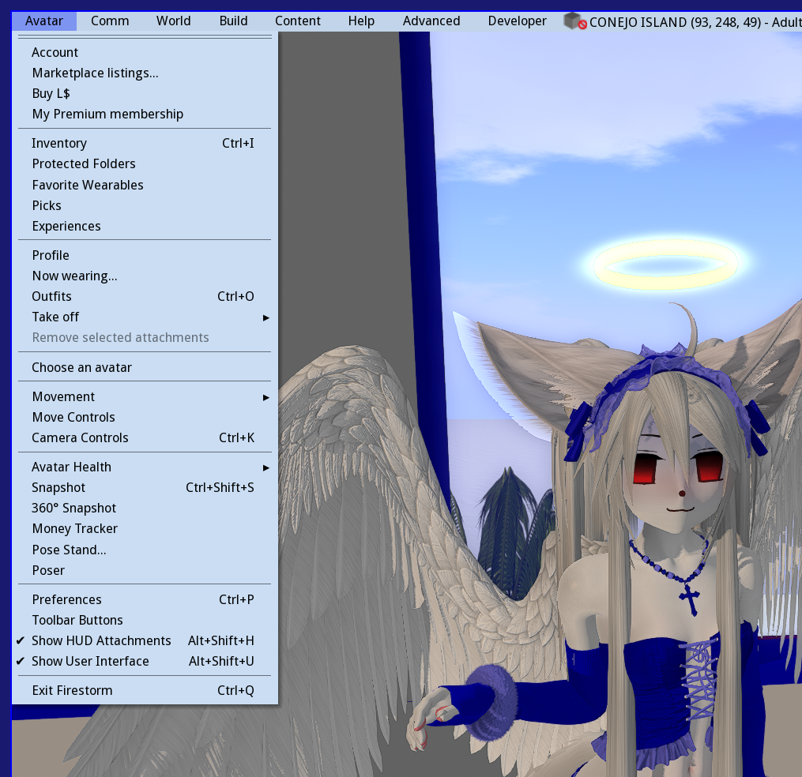
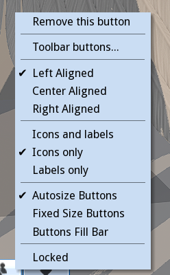
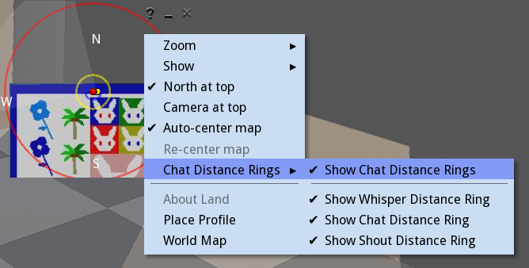
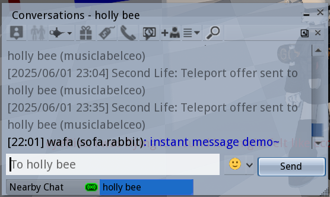
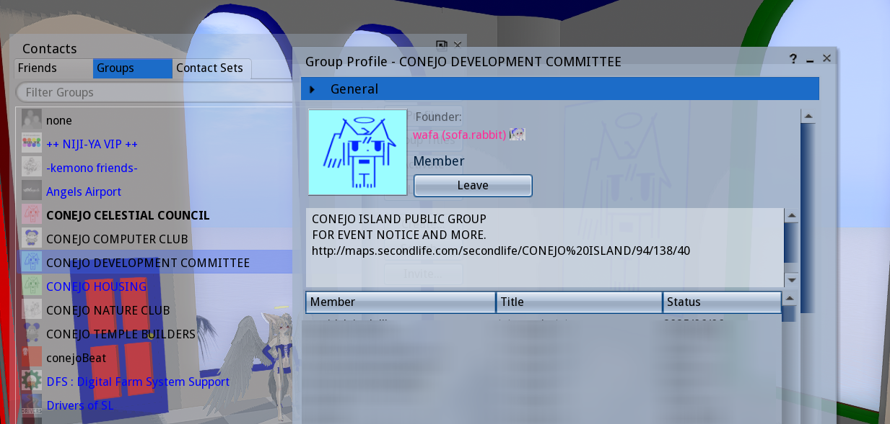
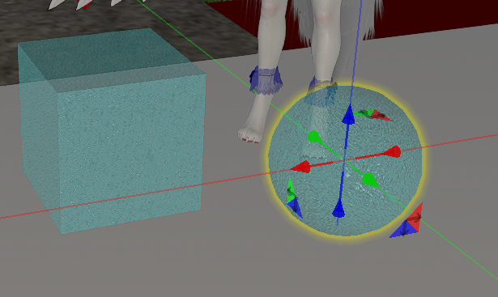

SECOND LIFE SCHOOL
BEGINNERS GUIDE
a lesson for getting started
INTRODUCTION

a true virtual world comes with a lot of complexity
luckily it is less complicated than the real world,
so i can teach you how to play
i am finally putting my knowledge and guidance into a manual that can help people get into the game
on their own without having to hope someone will take the time to teach them all of this.. and without spending months confused and unaware of important features
for the lesson i will be following a structure that has crystalized after a lot of experience guiding and teaching new users.
this is a
beginners guide on
how to play it and everything you need to know to get your start
if you don't know what second life is,
the wikipedia article sums it up well.
my
second life diary offers a glimse on what playing it is like
before we continue, ask yourself:
1.) are you over 18?
2.) are you open minded about different forms of expression, NSFW or not? (roleplay, furry, anime, etc..)
3.) do you like to 'make your own fun' (open ended experiences)?
4.) can your computer run graphical games with relative ease?
if the answers to any of these are no, second life may not be for you.
especially the first one, its not a kids game.
third party clients are usually better than the default second life 'viewer' (client)
this tutorial will be based on the
FIRESTORM VIEWER
most of the knowledge should transfer over to other viewers
some viewers may run better on different computers, you can try other ones if you find firestorm is too slow
(third party viewer directory)
some things in this manual may be firestorm specific
lets begin the lesson!
CHAPTER 1. BASICS
first we assume you have create a second life account on their website
enter your information into the viewer, and log in.
the first time you log in, you'll probably be in some sort of a 'tutorial area'
you are free to do this tutorial, but i'll be going over the same few things the tutorials tell you regardless
here are some safe places to go to while you get your footing
CONEJO ISLAND FUWORLD MORRIS SANDBOX
we begin with boring menu stuff/fun settings stuff :)
for the sake of a smooth experience, we will get these out of the way now. you will thank yourself later.
Ctrl+P to open Preferences

we can check the General tab first,
content ratings should be G, M, A
of course, you can limit the rating if you wish..
CONEJO is an Adult region,while most mainland regions tend to be Moderate
adult content is scattered all over second life, is not exactly well-regulated but the ratings still hold some weight
Adult regions tend to guarantee some explicit form of it, though it varies from region to region
Moderate regions are in-between, adult content seems to be ok but only in private? i don't see people get in trouble for nudity in these regions, but it depends on who owns it, everybody sets rules for their own land.
General regions are the only ones that allow under age users and are supposed to be 'family friendly' and not allow nudity or adult content. but again, it all comes down to who owns the land/region itself.
we can also set some
other things here in the General preferences tab,
like the appearance of Name Tags and what names are shown (Display name, Username, and Group title)
as you can see in the screenshot, i have name tags turned off.
this is just a personal preference because i like how it looks.
OPTIONAL: go to the 'Chat' tab under General and check this to enable chat bubbles in firestorm. if you have nametags off, you will see names only when people speak. its a nice detail to have.

jump to the Graphics tab.

you can set a preset here, and fine tune for performance when you need to.
i suggest lowering Draw Distance and disabling Shadows first if your game is slow.
second life is notoriously laggy. this is primarily due to all the unoptimized user content, the age of the game and to an extent, linden labs negligence.
there are already a few guides out there on how to 'optimize', so we will move on
next, jump into Move & view.
under the Movement category, these should be checked:

i also recommend going under User Interface and unchecking 'Use Pie Menu' since i will not be referring to it for this tutorial

really its much too easy to make clumsy moves with the pie menu.. life got easier when i did this
aside from what i've highlighted, there are lots of things you can tweak with Preferences.. chat colors, skins, UI font size, etc.
i suggest you do a run through all of them when you have the time..
the few things i've highlighted here are all you need for a comfortable start
now lets look under the 'Avatar' menu on the top bar, upper left corner

first, click 'Toolbar Buttons' at the very bottom
this will bring up a window with every possible button you can put in your tool bar

you can see in my screenshot my toolbars look a certain way,
i've removed some buttons and added others.
using this menu you can arrange things to be nicer for yourself and also get a quick overview of what buttons do and what you're working with.
while we're at it, you can right click the tool bar itself and access this little menu

this changes the look and arrangement. again, you can make it comfortable for yourself
go back to the Avatar menu, and look under 'Avatar Health'
the first half of this submenu is full of useful things.

many times things will go wrong with your avatar, and a simple run through these is a good troubleshoot
the problem can often be solved with Refreshing Attachments, or Undeform, or Reset Skeleton and animations
as you play more, you'll learn which is needed when.
resetting the Default Avatar is also useful at times, and considering the appearance of the new style default avatars, i'd recommend using one of these two right now in the meantime.. its still a bit before we get to avatar making
i think theyre pretty cute


alright, now we can take a short break from UI stuff to learn how to actually move and interact with the world, with MOVEMENT CONTROLS and CAMERA CONTROLS!
WASD or arrow keys to walk around
& you can run by double pressing fwd
E to jump, if held down, you'll fly!
C to crouch (also lowers your altitude while flying)
CTRL+ALT+S to sit on the ground
hold down ALT for the amazing Object View,
a free-mode camera.. allows you to look anywhere
ALT+CTRL to Object View rotate!
ALT+CTRL+SHIFT to Object View pan!
we can also control the field of view with CTRL+8,CTRL+9 & CTRL+0 (increase, reset & decrease FOV)
i find Object View is most of the game for me, and i tend to fix my camera somewhere for long periods of time
now let's talk about the 'world' itself
Open the Map menu with CTRL+M (or map button)

this menu locates you on the entire Second Life Grid, which is made up of many small squares called Regions
each is its own 'server' but you can cross them and it is essentially 'open world'
you can use this map menu to teleport, or to set checkpoint, etc, etc.
we can see more of the map if we click the small arrow on the right, like so:

if you zoom out far enough, you can see the 'Mainland', which are continents formed by many regions, and are connected by roads and waterways.
(there's a lot to say here, it will be its own article later)
another feature this menu has is the 'copy slurl' (SLURL = SECOND LIFE URL) button, which you can use to copy a link of whatever your coordinates are, and paste them into second life chat, web browser, chat apps, etc.
the scattered lone squares are individual 'private' regions that are seperate from the mainland
CONEJO is an example of a 'private' region.
all regions function the same, it is just who owns them and how they are paid for that makes a difference. you can only walk across regions if they are connected to eachother, and there are small island networks of 'private' regions forming user-made continents.
as you zoom into different regions, you can see the player count in each one, visually represented by small green dots. if you feel inclined to find people, one method people do is looking for the green dots..! this is also a good way to find botfarms.
if you want, you can type 'CONEJO ISLAND' into the text box and teleport directly. this goes any region names you know.
next, we'll look at the Mini-Map, which can be opened with CTRL+SHIFT+M

the mini map is very useful, but to a new user, it will look grey, or covered in blocks of color.. that makes it harder to tell where you are
so right click the minimap, and uncheck Objects under 'Show'

now the mini map should look a lot cleaner!
as you can see, theres a couple other things i can have checked. do whatever,..this is just what i like.
one last thing here is the 'chat distance rings' which can help you see who's in your chat range!

.. often you'll speak to someone only to realize they didn't hear you. you can use these rings to tell when its appropriate to shout and whisper!
now to talk about communication!
in second life, residents can communicate through
voice chat or text chat
sometimes both are used at the same time in the same place
still there are the text-oriented places and the voice-oriented places..
in CONEJO, for example, we mostly use text chat
i've found that second life is mostly text-first, with a majority of people willing to voice chat if asked
by default, voice is activated with the middle mouse button
there are two types of chat in second life, 'nearby' and 'direct'
nearby chat is where you type into automatically, with nearby you are communicating to those in your vicinity
it is the 'physical' chat
like i mentioned earlier, you can whisper (hold shift while entering message) or shout (hold ctrl while entering message) to affect different 'nearby' ranges

my chat window looks like this.. depending on your settings, it will look different, but the basics is just the log itself and the tabs.

direct messages or 'IM' is a private chat between you and another person,
every IM you open will appear as a tab in your chat menu.
if you IM someone and theyre offline, it will probably save the message..
but there is a chance the message won't go through for one reason or another.
also, do make sure you know where
you're typing! its a little confusing early on, since nearby and IM tabs can look almost the same
as you meet people, you'll probably want to keep in touch or know when theyre online
the 'People' button or 'Contact sets' menu will let you see your friends list

from here, you can IM your friends, send them teleports, pay them linden, etc.
you can also set certain permissions for certain friends, like allow them to edit your objects, locate you on the map and teleport to you, and whether they can see your online status or not
(but just for the record that ones only client side).. you can also see what permissions they've given you here
there is also the 'Groups' tab.. GROUPS. ..second life has groups!

they are usually used for notifying residents, but there are interest-based groups as well, where you can meet other people or ask questions about certain topics (groups tend to have their own IM-group-chat)
groups also grant you titles, which appear above your name tag.
you can right click the groups to 'activate' your group title, or use 'none' to be title-less
the last thing i'll put in this section is the Profile, which isn't exactly a crucial thing, but can be useful to fill up early on. many second life users tend to check the profile of residents they haven't seen before for a 'sniff'
 to see your own profile, go to Avatar > Profile
to see your own profile, go to Avatar > Profile
here we can set a short(or long) description, set what groups are visible to others, set a picture (if through firestorm it must be uploaded, i'll be talking about how to upload textures real soon), and
set our display name
the display name will appear next to your username, and you can only change it once a week
there are also the 'picks' and '1st life' tabs, these are more optional
Picks are landmarks to places you like, but are usually used as an extended profile by many players
1st life is the place for stuff related to real-life
to see someones profile, right click them and click 'view profile'
it can be fun to see the profiles of others, and you can learn things from it too
sometimes you even learn about a new group or place so dont be afraid to look
now to wrap up the 'basics' section with some extra details..
investigate the top bar
you can right click it to toggle different information according to your taste. there are uses for the stuff i have unchecked
with location enabled, you can see the region name, rating, your exact coordinates and what land permissions the land you're on has

up here you'll see your Linden balance, and in my firestorm skin i am able to set the Draw Distance up there too.

there is also the time in 'SLT' (which is just Pacific Standard), events may use 'SLT' for schedules, it is sometimes used as a standard to schedule with people across timezones
also shown here is FPS, and the sound & media settings.
the music note will toggle the land's music stream, if your media is set to play by default you can turn it off with this button.. this ability to stream sound through the land is how clubs play their music, though you may find a lot of places just have a music stream going anyway.
notifications of four types will pile up in the 'letter' looking icon.. its nice to clear it often.
and of course we've got the IM and groupchat notifications piling up next to it, you can see and open ongoing IM communications with these icons
this button may or may not already be in your toolbar already, the 'Quick Prefs'

theres a lot of useful little things here that you may not understand now but appreciate later, so keep that button on sight. you can actually add stuff to it if you someday desire..
finally, note that the microphone icon is the toggle for voice, if you don't want to accidentally keep the microphone on, leave the little box unchecked

you can click that headphones icon to access the 'nearby voice' window, to see whos speaking and set different volumes for each person.
..and don't worry about 'voice morphing', its a paid feature not a lot of people use
CHAPTER 2: INVENTORY, OBJECTS, ENTITIES
now that we can move around and navigate the UI, its time to confront some deper second life stuff.
knowing your way around the inventory early will make avatar creation a lot easier.
SL inventory is a little strange compared to most games.. this is where a lot of new residents get stumped.
open the inventory with the briefcase icon or CTRL+I
as you can see, the second life inventory functions much like a file system

these are the default folders.
you don't want to delete these,
you can add your own folders ontop or inside of them later.
let's understand the inventory menu..

at the top, we have the search bar. you may find yourself using this to look up items quickly.
there is also the 'collapse' and 'expand' buttons which close and open all the folders respectively.
next to it is the Filter, which is useful for limiting what type of item is visible in the inventory
and under all that we've got three tabs, 'Inventory', 'Recent', and 'Worn'
the 'Worn' tab shows only what your actively wearing, and the 'Recent' tab will only show objects from a recent time frame (which you can change)

onto the bottom part, we have a cog button with access to various settings, and next to it a plus button that allows you to easily create new folders and new entites
there is a briefcase button here too, which will open a second instance of the inventory menu.
there are many cases where it is useful to have at least two of these open, and you can open more than two
'x number Elements' simply tells you the amount of stuff in your inventory
most people will have a big button that says "Recieved Items" right here in the lower bar.
this is actually just a folder in your inventory, but its only filled with things you recieve from the second life marketplace.
more on that later.
i have Recieved Items set so that it appears as a folder in my inventory.
you can do this too, though it may be confusing for players not used to finding things in their inventory
LETS LEARN ABOUT THE DEFAULT FOLDERS & OBJECT ENTITY TYPES
1.) Animations
animations do what you think they do!
these are
loose animations, you can click on one to open a small menu that allows you to play it


the idea is that you can insert animations into Scripted Objects, and from here we achieve things like animated furniture, animation overrides, dance huds, etc.
you can also just play the animation on its own

animations are often passed around groups of users, so i have many accumulated throughout the years, but there are also animations you buy from animation-making stores
2.) Body Parts & Clothing
these two folders contain things that are connected
before there was mesh in second life, avatars all used the same base mesh, customizing it with items that became known as 'body parts'
so skins, tattoos, eyes, pants, shirts, were all objects of their own category, and function as baked textures

nowadays, systems are in place so that these can now be used with uploaded mesh.. thank god!
for a while these were useless to modern avatars, but now they are compatible,
everybody wears their skin textures, tattoos, and more through this system
to avoid getting overwhelmed, lets just remember second life is strange and old, the features tend to be 'stacked' on top of eachother
for now we can just focus on ONE item type that resides in this folder called "Shape",
Shapes are items that will determine the slider proportions of your avatars body, and you can only wear one at once.
everybody has a shape, it's not possible to have no shape on
you can edit your current shape right clicking yourself, Appearance > Edit Shape
you can save that for later if you want, we'll be returning to shapes in the avatar section too..
3.) Current Outfit
a folder containing whatever you are currently wearing, the same things you see in the 'Worn' tab, except everything in here is a 'link' to the original
4.) Gestures
a social entity used for chat
this is another type of thing that gets passed around a lot, you willl accumulate a small collection with time

gestures can activate sound, text, and animations in a given sequence in response to either a shortcut or a text-command
you'll notice gestures are used a lot and they're pretty fun.
there is a term called 'gesture spam' that refers to when players either play a gesture repeatedly or spend an extended amount of time doing nothing but playing gestures.
its less amusing as years pass playing the game, but we all still like to have a good gesture spam every once in a while.

an example of a gesture that prints a bunch of text! these are known as 'club gestures'..
CONEJO has a free collection of gestures you can get here
now for a quick detour about the gesture menu
..see, in order to use gestures they must be 'activated'
right click a gesture, and click 'Activate'.. you must do this with every gesture you want to use
it may seem inconvenient, but there is a reason..
gestures all come with their own 'triggers'..
if gestures all activated automatically you might find yourself wondering why hitting the spacebar is activating a punching animation or fart sound.
it can be a little embarassing to mindlessly activate a gesture only to realize it causes you to make an undesired sound when you press a common key or say a common phrase
of course sometimes you like the gesture and keep it on.. its just good to check first.
double click a Gesture in your inventory, or right click one and select 'Edit' and you will see the following menu

here you can see what the chat 'Trigger' and Shortcut Key are (if there already is one), you can also Preview the gesture before activating it with the button below, and if you make any changes.. click 'Save'!
note what activates the gesture and if you think it should be changed, you can change the trigger and shortcuts of gestures how you like.. just keep in mind these effects will carry over if you transfer the gestures
a lot of times we may end up disabling certain gestures altogether because they interfere with conversation tone,
for example, you could eventually you realize you don't want that 'OK' sound gesture playing each time, so you can simply deactivate it. this is just one of the many ways you can fine tune expression in SL
accidental gesture activation becomes a rite of passage, and you won't be shamed for accidentally playing gestures during conversation
now you can access the Gestures menu with CTRL+g and see all your gestures!

this menu provides a reference for how the gestures you have active are triggered, and here you can do all the gesture dealings
5.) Landmarks
landmarks contain coordinates to a place (SLURL), and you can use these to go back to places or share them with friends.
you can make a landmark of any place any time, and landmarks you recieve will begin to pile up here
there is a menu for managing landmarks, called Places, which we can access through the toolbar or with 'ALT+H'

here you can see all your landmarks, create new landmarks, set favorites, share them to others, etc
you can also see your teleport history here, but keep in mind that these are not landmarks, so you cannot transfer them and they may dissapear
6.) Lost And Found
in the case you rez items in other peoples land or in a sandbox, things may be returned either by the owner or automatically
anything returned to you goes into the lost and found
you can periodically clear it like so:

7.) Materials
part of a recent second life update, materials are PBR shader texture settings that you can add to objects.
this is the most recent 'feature stacking' kind of thing.
i myself dont have a 100% grasp on PBR yet but luckily its not something a beginner needs to know
8.) Notecards
pretty much just textfiles

they can be a way to share information..
notecards are usually given inside of products for explanations, elaborations or manuals, but also used for other things, like communication & event notices.
notecards are often also crucial part of some scripts

9.) Objects
the main type of item, can be mesh or second life primitive

objects go into object folder by default, unless they were given to you as a folder
this goes for all items actually, but objects in particular is a folder that can become unruly if left unsorted.. these make up most of second life after all
10.) Outfits
link collections of objects, you can use this to save what you have on and wear it later

this is how people change avatars or outfit
usually we are not interfacing with outfits through the inventory, but this is where they are
stored and you can
right click > replace current outfit to wear a saved outfit from here
the outfits menu makes it easier to manage and change outfits though, and we can access the appearance menu with the T shirt button in the tool bar

11.) Scripts
scripts are written in the LSL programming language, and are responsible for a variety of things in second life

HUDS, furniture, animated objects, are all dependent on scripts
there are many pre-made scripts you can use/edit, or you can learn to make your own.
most objects you find in second life contain a script inside them!

12.) Settings
a somewhat misleading name, it refers to different settings for the Sky, Water & Day Cycle
in second life, you can change the look of the enviroment in various ways, and a couple years ago the enviroments became their own items in the inventory. this is one of the things i will save for a later lesson
there are some free Settings you can try out from the CONEJO lobby..

13.) Sounds

sounds are incorporated into gestures and scripts, and are not much use on their own, but you can play a sound outloud by clicking on it
sounds can only be 10 seconds max, and are uploaded as wavs
14.) Textures
textures! they are self explanatory. present all over second life, for everything.
max 1024x1024, but theres a recent option to upload 2k textures

15.) Trash
anything you delete will go in here. you should purge the trash regularly, just make sure theres nothing in there you might want back.
okay.. so thats all the item types and default folders.
there are also the'Library' folders, which contain a number of default objects.
these are seperate from your inventory, but you can make good use of them, and there are some useful things in here i still use all the time.
THE PERMISSIONS
all the objects in second life have three permissions:
COPY, MODIFY & TRANSFER
you will see (no copy), (no modify), (no transfer) next to the objects name depending on the permissions
COPY refers to the ability to make copies of the object
MODIFY referes to the ability to modify the item through the edit menu
TRANSFER refers to the ability to give objects to your friends
these permissions are important to be aware of, and pay attention to when you are buying objects or when you are making them.
for example, in many cases its best to avoid stuff that is NO MOD, because then you can't change the color or texture.
if something is NO COPY but still TRANSFER, then giving it away or deleting it will have it gone for good. things like that..
GOOD INVENTORY HABITS
~MAKE COPIES right click.. copy & paste! copy things any time you edit them. it will save you. copy objects for different avatars. back up originals.
~CATEGORIZE AND ORGANIZE don't let your inventory become a mess. i had to dedicate so much time later on to organizing, and it's not even 100%. it just becomes unmanagable after a while. start early.
you can use my categories as a guideline. if you have folders with themes and categories, you won't forget you have stuff.
also, making thumbnails for folders/outfits/objects is surprisngly free so, take advantage of that if you wish
CHAPTER 3: BUILD AND EDIT
for this next section, you can either go to the CONEJO sandbox where rez is enabled, or a public sandbox like MORRIS
it doesn't have to be these places. you can find yourself any rez enabled place for this next section..
but whats rez mean, anyway?
rez is the word used in SL for an object loading into the world, 'spawning' in.
when you drag something out from your inventory into the world, you rez it. when you log in, you rez in. objects can de-rez, etc.
most places have rez off because there are limits to how many objects can be placed on any land
with rez on, there is all sorts of possibilities for things to get lost, take up a huge number of limit, lag the sim with scripts, and other types of stuff that isn't good intentional or not.
but there are places with rez on, be it the small sized 'rez zones' scattered through roads or regions, or 'sandboxes' which are larger parcels of land with rez enabled (paired with an auto-return & time limit)
sometimes a place just has rez enabled anyway, in these cases its okay to rez a thing or two, but you might want to clean up after yourself.

is rez enabled here? look at the top bar, this icon means rez is disabled.. if its not present, then you're good to go
before we get into the rabbithole of avatar, its good to know how to rez your own objects and edit them
you'll be ready to edit anything you recieve.. or make your own prim items.. really, modifying and editing things is one of the best parts of second life!
BUILD & EDIT MENU
we can open the 'Build Menu' with CTRL+B,
this is actually just a portion of the entire edit menu, which can be accessed right clicking anything and clicking "edit"..

lets start with the building part, you'll see the cursor become a magic wand and this menu with shapes will appear
 click on the rez enabled ground and watch a cube appear
click on the rez enabled ground and watch a cube appear

these are the primitives, or 'prims' of second life.
in the beginning these were all residents could work with.
eventually mesh upload was added ontop of this, another in the trend of feature stack..
anyway, anything generated from this build menu is
prims, and everything else is uploaded
mesh.
you can do a lot with prims, and i've built many buildings with them.
when we Right Click and 'Edit' the cube we rezzed, we can see the edit menu's 'General' tab

first of all, text thats easy to ignore but important to note: land impact

land impact, previously or sometimes referred to as "prims" or "prim count" is the amount of load the object has on the land.
due to the changes and additions to second life, it is no longer as simple as each single prim being equal one prim out of a total count.
with mesh in question, the counts are considered differently.
for prims, you can expect each individual primitive to count towards one,
and nowadays if you link prims together, you may get a slightly lower count.
these are things you'll only really be concerned about if you own or rent land..
still, it is useful to see the capacity of the land you are rezzing in
continuing on, we see inputs for object Name and Description
you can set this for your own objects, and you can modify the names of objects you own as well.

below these inputs are the Creator, Owner, and Last Owner.. you can right click "edit" objects you dont own and see who placed/created them this way.

and below that, we have some options regarding the way people interact with the object..
here you can set and edit permissions, and set what happens when someone clicks the object, or set the object for sale.
TIP: you can mouse over value input boxes and scroll to increase or decrease the number
..EDIT MENU OBJECT TAB

here we have some number-heavy settings, the position of the object, the size, rotation etc.
the 'C' and 'P' buttons can be used to copy and paste values between objects
there are also some deformations you can perform on the prim like slice, hollow, skew, shear, taper, twist which i recommend you play with later in your own time.
also note those check boxes,
Locked makes it uneditable (even by yourself),
Physical makes the object behave with physics allowing it to be pushed and thrown around,
and Phantom makes the object have no physics, allowing anything to phase through it
..EDIT MENU FEATURES TAB
this one has less to talk about right now, but contains the option for a 'flexible path'
which is how flags, hair, and more are made.
you can also make the object a light here, which i think is important. lights are useful.

..EDIT MENU TEXTURE TAB
this is the tab i spend most time using
its become less newb-friendly since they added the PBR tab, but i'll briefly overview it. i'll speak mainly of the 'Blinn-Phong' since its just how objects were edited until now. it looks a little different, but SL is still adjusting to the addition of PBR anyway.

well theres a lot of information.. its less scary if we break it down

lets start here.. the 'Diffuse' box is where we set the selected areas main texture (this is the diffuse map in 3d terms)
when you click the texture boxes, you will be prompted with a texture picking menu

with this little menu, we can access a version of our inventory that is only textures and pick one for the object.. you probably don't have textures accumulated yet (though there should be some in the library folders!), but don't worry about it for now.
CONEJO, among many other places offer free and cheap texture packs to use with prim creations

observe this portion of the texture Pick menu
there is a big eye dropper tool.. this can be used to sample textures from other objects if the permissions allow it
we also see the buttons 'Default', 'Blank', and 'Transparent' .. which set wood, white, and transparent textures respectively
for now, just click 'blank'
now close the texture Pick window, and click on the 'Tint' rectangle next to the Diffuse.. this should bring up the color picker!

straight forward. you can enter hex codes/rgb values, or use the sliders.. and there are preset colors below, which you can edit/add your own colors into. of course, if you have a texture set, it will be affected by the tint!

next to the tinting and texture options, we have Full Bright, Glow, and Transparency
Transparency does what you think it might, and under it we have some alpha settings that apply to textures with alpha channels
..below are examples of Full Bright (left) and Glow (right) effects.


Glow is nice in lower numbers. FullBright makes the object become unaffected by shadow, light, enviroment.. bright, like the name suggests..
now, lets observe these two texture input blocks below, Normal and Specular..

if you already know about 3d, then this is self explanatory..
if not then heres a short intro
Normal Map ~> 3d bump detail without adding polygons
Specular Map ~> determines the shininess, can be tinted with 'Color'
here is a cube i messed with, see how a normal map with blank specular makes it look:

i usually set specular to a blank texture, and use the 'color' input to change the color of the shine if i need
take a look at the very bottom where you see all those number input boxes

these are for editing the texture's dimensions..
Scale, Offset and Rotate.. H for Horizontal and V for Vertical
note the tabs that show you if you are editing the Diffuse, Normal or Specular map..
'Repeats per meter'determines how many times the texture is tiled
if you look in the upper right of this menu, theres these two buttons that are kind of hiding.. these are copy and paste buttons, so we can clone our texture settings easily

with the cubes texture params copied, we can open the edit menu of ANOTHER object, and press the 'paste' button to apply the same parameters!

if you want, you can take a look at the PBR tab, but i will not be detailing it. as you can see this makes use of Materials mentioned last chapter.. there are differences here, but also some similarities..
investigate this any time. its not crucial to our beginners lesson.

lastly the 'Media' tab!.. simply turns the selected prim texutre into a browser allowing web pages to be shown :)

..EDIT MENU CONTENT TAB

this is the 'inside' of the object.
you can drag anything into here.
 content is turned into a folder when an object is set to give/sell contents
content is turned into a folder when an object is set to give/sell contents
it is also where scripts are put in order to have effect on the object, and where the textures/notecards/objects the script may call for are put into.
now, lets dig into the manipulation part of the edit menu, which is the middle button out of the five here

here we can manipulate objects while they are rezzed, but also while we are wearing them.
move, rotate, stretch! note the shortcuts, you can do stuff quicker using them.


we also have select face, which allows us to edit only one face of an object

with Select Face selected, each face of the object becomes highlighted like so:

and in the menu, little arrows appear ~> 
selecting faces with clicks isn't always convenient
you can use these arrows to cycle through the faces.
its a little slow though,
CTRL . and CTRL , can be used to scroll through faces!
a prim after individual faces have been edited..

as you can see up there, a check box is present called 'Edit Linked'
when this is enabled, you can scroll through all the linked parts of an object (if our object is linked to begin with)
now please rez another cube
 hold shift and select both cubes
hold shift and select both cubes
 we can duplicate the cubes by dragging with shift held down
we can duplicate the cubes by dragging with shift held down

while you have two or more of your cubes selected, you'll see these two new buttons 'link' 'unlink' light up
 you can click Link and see the cubes become one object
you can click Link and see the cubes become one object
and if you need to take a linked object apart and you can click Unlink
you can do this while selecting only part of the whole object to Unlink only that,
or simply do it while the whole object is selected in order to turn all linked parts into seperate objects
textures, sounds, mesh models can be uploaded by going under Build > Upload in the top bar
it costs 10Linden per upoad..
thats pretty much all there is to editing for now.. whew
now we are primed to become an avatar in this world
CHAPTER 4: THE AVATAR